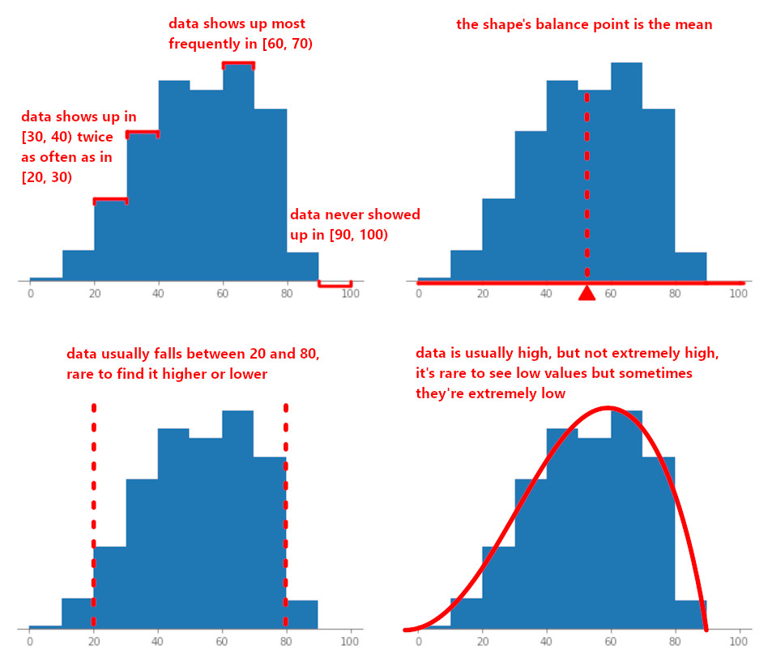
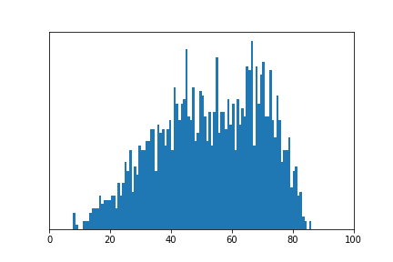

Exploring Data¶
It’s time to get familiar with the basics of exploring a data set we haven’t seen before. In this chapter, we’ll be working with climate.csv, a data set compiled from a number of queries from the NOAA (National Oceanic and Atmospheric Administration) website.
Citation:
NOAA National Centers for Environmental information, Climate at a Glance: Regional Time Series, published July 2020, retrieved on July 21, 2020 from https://www.ncdc.noaa.gov/cag/
import babypandas as bpd
import numpy as np
climate = bpd.read_csv('../../data/climate.csv')
The most important task when working with a new dataset is to get familiar with the data by exploring it – that way it will be easier for us to analyze the data in the future.
Let’s start by understanding what the table actually contains. The easiest way to do this is by simply looking at the first few rows of the data.
climate.iloc[range(3)]
| year | month | region | temperature | rainfall | zndx | |
|---|---|---|---|---|---|---|
| 0 | 1898 | 1 | Northeast Climate Region | 21.7 | 4.56 | 2.41 |
| 1 | 1898 | 2 | Northeast Climate Region | 24.8 | 3.60 | 1.69 |
| 2 | 1898 | 3 | Northeast Climate Region | 38.0 | 2.87 | -1.55 |
An additional data description explains that the table contains climate data from 1898 to 2019, with a recording for each month from each climate region. Included records are the average temperature in degrees Fahrenheit, total rainfall in inches, and the Palmer Z Index for that specific year/month/region. That all seems pretty understandable… but I’m not a meteorologist so I don’t know what climate regions are or what the Palmer Z Index means!
The region column is considered to be a categorical feature because its values are not numbers, and each value can only come from a finite set of choices. Since we know there is a limit to how many climate regions there are, we can explore the column by using the .unique() method.
climate.get('region').unique()
array(['Northeast Climate Region', 'Upper Midwest Climate Region',
'Ohio Valley Climate Region', 'Southeast Climate Region',
'Northern Rockies and Plains Climate Region',
'South Climate Region', 'Southwest Climate Region',
'Northwest Climate Region', 'West Climate Region'], dtype=object)
Based on the names of the regions, we can deduce the general area of the U.S. that each region covers.
Tip
Questions about your data set should also be looked up online! Effective data exploration revolves around quickly becoming an semi-expert in the domain of the data set.
The rest of the columns seem pretty self explanatory in terms of their meaning, so the next step of exploration often revoles around getting a sense of what our data ‘looks’ like, then eventually discovering patterns and interesting aspects of our data.
Introduction to proportions¶
One quick way to explore our data is to see how much of the data satisfies a certain condition.
Say we are curious – for the sake of exploration – about how many of reported temperatures were at or below the freezing point (32 degrees Fahrenheit). We already know how to perform a query to only get the rows where this is true.
freezing = climate[climate.get('temperature') <= 32]
And we can use .shape[0] to find out how many rows are in this selection.
freezing.shape[0]
2062
That doesn’t seem so useful. Is 2062 big or small? Is it closer to half of our data set, or less than a single percent?
A raw count, like 2062, isn’t insightful unless we know what we’re comparing it against!
Fortunately, we can make it insightful by dividing it by the number of rows in our full data set.
prop_freezing = freezing.shape[0] / climate.shape[0]
prop_freezing
0.15649666059502126
The result is called a proportion. A proportion is a way of expressing the fraction of the total that satisfies a condition – and they really do come from fractions!
When someone asks for the “proportion of …”, they’re wondering what fraction of data satisfies the condition they’re about to propose.
For example, if we had four data points and only one of them was below freezing, we’d consider the proportion of points below freezing to be \(\frac{1}{4}\) or \(0.25\).
Notice that you can turn this into a percent by just multiplying it by 100. So out of our full data set, roughly \(0.156 \times 100\% = 15.6\%\) of the recorded temperatures were at or below freezing (brrrrr).
What proportion of recorded temperatures do you think were above freezing?
not_freezing = climate[climate.get('temperature') > 32]
prop_not_freezing = not_freezing.shape[0] / climate.shape[0]
prop_not_freezing
0.8435033394049788
The final important observation we need to make is that the proportion of points that do satisfy a condition and the proportion of points that don’t satisfy that condition will add up to one. And, since we’re just calculating the size of a subset of our data, proportions will always be between zero and one.
prop_freezing + prop_not_freezing
1.0
That’s all on proportions for now, but don’t worry! We’ll work with proportions again in the future.
Your first chart¶
There’s an age-old-addage that “a picture is worth a thousand words” – the same often holds true for data science!
Throughout the exploration process, we’ll be relying on charts to help us visualize and ultimately understand the data. While Python has many libraries that can create charts, Babypandas has the capability built in by using the .plot() method. With this method, we can create many types of charts – including some you may be familiar with like bar charts and line charts, as well as others like histograms and scatter plots.
The general syntax to create a chart using Babypandas is:
<table>.plot(kind='<chart_type>', x='<column_name>', y='<column_name>')
If the plot uses two features, then x will be on the horizontal axis and y will be on the vertical axis – we’ll see this momentarily. If the chart only needs a single feature, then only y needs to be specified.
To actually understand what’s going on, let’s try making our first chart. Below we define a example table of ice cream cones, along with the number of cones sold and a yumminess score (out of 10) for each flavor.
icecream = bpd.DataFrame().assign(
Flavor=['Chocolate', 'Vanilla', 'Strawberry'],
Cones_Sold=[7, 5, 4],
Yumminess=[8, 9, 2]
)
icecream
| Flavor | Cones_Sold | Yumminess | |
|---|---|---|---|
| 0 | Chocolate | 7 | 8 |
| 1 | Vanilla | 5 | 9 |
| 2 | Strawberry | 4 | 2 |
We can use a bar chart to compare the number of cones sold of each flavor. Since we’re interested in seeing how the number of cones sold changes as a result of the flavor changing, we specify x as Flavor, and y as Cones Sold.
In the resulting chart, each flavor will have its own bar, and the height of the bar corresponds to the value of cones sold – so in this case, the bar for Chocolate is 7 units long since there were 7 chocolate cones sold, but only 4 units long for Strawberry since there were 4 strawberry cones sold.
icecream.plot(kind='bar', x='Flavor', y='Cones_Sold')
<AxesSubplot:xlabel='Flavor'>
You’ve done it! We made a chart from a table. Perhaps you’re already getting some ideas for how useful these charts can be – read on to see just how much we rely on them while exploring our data.
Distributions¶
As you work with data scientists and statisticians throughout your life, you’ll often hear people asking about the distribution of a feature.
This generally boils down to answering three important questions about a feature:
What is a typical value for this feature?
What range of possible values would be expected?
Are we more likely to see high values within that range? Low values? Both high values and low values, but not values in the middle?
Well, the first two seem pretty approachable through metrics that we already know how to calculate – such as using the mean of a feature to find the typical value, or calculating the min and max to get a range of possible values. But the third question seems a lot more challenging to represent just by using numbers.
But we have the power of charts! And we can use a specific type of chart, called a histogram, to answer all three of those questions.
Histograms¶
A histogram is a type of chart that gives us a visual representation of the distribution of a numerical feature by expressing how many times the data shows up in a given range.
We can create a histogram of our recorded temperatures by simply specifying kind='hist' and setting y to the name of the column we’re intreseted in. This example also specifies two additional arguments that may seem mysterious, but soon you’ll know what they do!
climate.plot(kind='hist', y='temperature',
bins=np.arange(-10, 101, 10), density=True)
<AxesSubplot:ylabel='Frequency'>
You can think of a histogram as similar to a bar chart in concept. Each bar corresponds to a range of values called a bin, for example at the very left of the chart there is a bin from zero degrees to ten degrees. The height of each bar corresponds to how much of the data falls into that bin.
Important to note: the bins of a histogram include the lower number, but exclude the higher number. Also, we’ll usually express these bins using the mathematical notation for intervals so the bin containing temperatures from 0 degrees to 9.99999… degrees is written as \([0, 10)\). This means that if a temperature was equal to 10, it would show up in the bin starting with 10, e.g. \([10, 20)\).

All sorts of information about our data can be gleaned from just the histogram. For example, in the histogram above we can tell that the bin with the greatest frequency of values was \([60, 70)\) since that bar is the highest, whereas no data fell in the bin \([90, 100)\) since that bar doesn’t show up at all! By thinking about where the balance point of the shape is, we can find the mean of the feature. By looking at the extremes of our histogram we know that our temperature data is never greater than 90, and never less than 0. But, since the bars at the extremes are short, we know that it’s more likely for us to find temperatures between 20 and 80 degrees. And, we can notice that the mass of the histogram bunched up towards the higher end but stretched out on the low end, so it’s more likely for us to see a high value but every once in a while we might find a very low value.
Setting the level of detail¶
You’ll notice that in our example above, we also specified a bins argument. This argument allows us to specify how many bins we want our data split up into, or even allows us to set the range for each bin manually. But why does it matter?
The number of bins we use to draw our histogram has a intrinsic effect on the level of detail of our histogram. It’s probably best to see this point illustrated, so below you can see the histogram for the same data above, but animated as our number of bins changes from one-hundred down to two.

Notice that as the number of bins decreases, each bin gets wider and our histogram appears to smooth out – until a point at which decreasing the number of bins makes the shape more choppy. With too many bins it looks noisey and is hard to find a smooth pattern. With too few bins our view becomes overly simplified can obscure patterns.
Each frame of the animation above was made by plotting with bins set to the integer number of bins we wanted to split the data into.
climate.plot(kind='hist', y='temperature', bins=20, density=True)
<AxesSubplot:ylabel='Frequency'>
By default, the bins will collectively range from the minimum value of the feature to the maximum value. So, we can calculate the width of each bin as $\( \mathrm{width} = \frac{\max - \min}{\text{number of bins}} \)$
But you may notice the problem with this – it’s pretty hard to tell which values a particular bin covers! For example, what values would fall into the tallest bin? Could you tell without needing to do calculations or stare tediously at the horizontal axis?
The solution to this issue is but setting our own custom bins. This was done in the example above, and is accomplished by setting bins equal to a sequence of start-points for our bins. The very last entry of the sequence is the end-point of the last bin (exclusive, remember!).
You could pass in a list, requiring you to manually type each interval. E.g. we could create the bins \([-10, 15)\), \([15, 40)\), \([40, 65)\), \([65, 90)\) by writing the following:
bins = [-10, 15, 40, 65, 90]
climate.plot(kind='hist', y='temperature', bins=bins, density=True)
<AxesSubplot:ylabel='Frequency'>
But, recall from Arrays that we can make better use of a range here. By passing in the range from -10 to 90+ with a step size of 25, we achieve the same result. Just be careful to remember that histogram bins and ranges are both exclusive on the upper bound. So, if we want our bins to end with \([65, 90)\), then the endpoint of our range must be greater than 90! A common technique to make sure your desired endpoint is included within a range is to add the step size to the value.
bins = np.arange(-10, 90+25, 25)
climate.plot(kind='hist', y='temperature', bins=bins, density=True)
<AxesSubplot:ylabel='Frequency'>
Tip
The upper-bound-exclusionary nature of histogram bins and ranges can make it confusing to know if you’re accidentally cutting of data. Feel free to evaluate the range in its own cell, and make sure that the last value in the sequence is greater than the maximum value of the feature.
Conveniently, if we ignore the bins argument then a bin count will automatically be chosen for us. Honestly the automatic count usually results in an appropriate level of detail! But not always. It’s important to know how to alter the bins if we want to explore our data more diligently.
For the rest of this section, we’ll use some custom bins to make things easier for ourselves.
nice_bins = np.arange(-10, 100+10, 10)
The math behind histograms¶
Often, we use histograms to quickly get an intuition about the shape of our data. However, if we study the numbers on the vertical axis a bit closer we can extract important information about the proportion of data falling in each bin. We just need to make sure we set density=True when we call the plotting method.
Recall from our introduction earlier in this chapter that proportions are almost always more insightful than raw counts. Unfortunately, the default behavior of the plotting method is to plot a histogram of – you guessed it – raw counts (yuck!).
climate.plot(kind='hist', y='temperature', bins=nice_bins)
<AxesSubplot:ylabel='Frequency'>
Notice that the shape of our plot remains the same, only our vertical axis changes.
climate.plot(kind='hist', y='temperature', bins=nice_bins, density=True)
<AxesSubplot:ylabel='Frequency'>
(0.0175 + 0.02 + 0.014 + 0.002)*10
0.535
When density=True, the proportion of data that falls into a given bin is equal to the area of that bin. This means that in additional to providing us with a general intuition for how data falls within a certain range of values, the histogram also allows us to find this information mathematically! The formula becomes,
Let’s try it out. We’ve noticed that temperatures show up with the highest frequency in the bin \([60, 70)\), let’s find the proportion that fall in that range.
Since the height of that bin is just over \(0.02\), we calculate the proportion of data in the range \([60, 70)\) as
That’s that’s at least a fifth of our entire data set!
To get a sense of the proportion of data across multiple bins, say temperatures from 50 degrees all the way to 90, we can simply add the proportion of each individual bin! Notice that if the bins are all equal in width, we can add up all the heights and then multiply, since multiplication distributes over addition.
Hmmm… that’s pretty close to \(50\%\)… the median of the data set must be somewhere nearby.
What would happen if we added the areas of all bins? Turns out, we’ll arrive at a sum of \(1.0\). Indeed, the histogram can confirm the fundamental truth that 100% of our data falls within the extent of all of our bins!
Note that in our calculations, we took a bit of liberty in estimating the heights of the bins, so if you were to try adding the areas in practice you may arrive at a number slightly more or less than \(1.0\) due to errors in approximation – and that’s totally fine! If we wanted to be completely accurate about the proportion of data in each range, we would compute it directly. But the point of a histogram is to make initial exploration and basic calculations quick and easy, so we can rest easy knowing that we’re working with estimates.
A note about density
It would be rude to move on without giving some indication of why the term ‘density’ is used, or without discussing how the heights are calculated in the first place!
Technically, the height of each bin actually represents the ‘density’ of data in that interval.
You can think of this ‘density’ the same way you would think of density in a physics or chemistry class – it’s a ratio between how much stuff you have versus how much space it’s contained in.
Mathematically, the bin heights are calculated as
See how we’re able to use bin height and bin width to reverse the calculation and arrive at the proportion?
Categorical distributions¶
If we’re working with a categorical variable it’s important to look at the frequency of the categories. For this, we can use a bar chart in conjunction with .groupby and .count.
The resulting chart is no longer a histogram since we’re no longer working with numerical bins, but the end result is similar: we get a sense of the frequency of different values of the feature. And, similar to the histogram, it is preferrable to work with proportions of frequency instead of raw counts. We accomplish this by performing element-wise division on our counts by the total number of rows in our data.
region_counts = climate.get(['region', 'year']).groupby('region').count()
# We can assign a new column as the proportion of each region
region_props = (
region_counts
.assign(proportion=region_counts.get('year') / climate.shape[0])
.drop(columns=['year'])
)
region_props.plot(kind='bar', y='proportion')
<AxesSubplot:xlabel='region'>
Unsurprisingly, the proportion of data is equal for every single climate region. That’s what we expect in this situation (each climate region has a measurement for all months from 2000 to 2019). Since we know that we should expect all of the climate regions to have the same proportion of measurements, if the chart showed us that the frequency wasn’t equal then we’d know something was wrong with our data!
Trends over time¶
Since our new data set contains a column to progresses through time (the year), it’s possible for us to discover trends in our data. For example, how has average temperature changed over time?
We can group by the year and aggregate using the mean, but once again it’s challenging to spot trends just from a series of numbers.
temp_over_time = (
climate.get(['year', 'temperature'])
.groupby('year')
.mean()
)
temp_over_time
| temperature | |
|---|---|
| year | |
| 1898 | 50.659259 |
| 1899 | 50.170370 |
| 1900 | 51.824074 |
| 1901 | 50.826852 |
| 1902 | 50.623148 |
| ... | ... |
| 2015 | 53.503704 |
| 2016 | 54.004630 |
| 2017 | 53.592593 |
| 2018 | 52.690741 |
| 2019 | 51.850000 |
122 rows × 1 columns
The human brain is hardwired to detect patterns, but in order to see a pattern amongst numbers, we need to keep all of the numbers in our head. Visualizations like line charts address this issue!
Once again, the column that we want to be the horizontal axis is our table index, so we set x to None (or don’t specify it).
temp_over_time.plot(kind='line', x=None, y='temperature')
<AxesSubplot:xlabel='year'>
A word of caution: notice that that the chart boundaries shrink to fit the data as closely as possible. While this can be nice because it allows us to focus on the changes in the data, it can also be very misleading! For example, the average temperature from 1963 to 1972 never varied by more than a degree, but the line plot still looks very dramatic!
from_63_to_72 = (temp_over_time.index >= 1963) & (temp_over_time.index <= 1972)
temp_over_time[from_63_to_72].plot(y='temperature')
<AxesSubplot:xlabel='year'>
This is another situation where domain knowledge is necessary to avoid jumping to false conclusions. How important is a single degree of change in average temperature? We should always be careful not to let charts scare us.
Comparing groups¶
We’ve seen a bar chart as the very first example of a chart in this chapter, and we’ve seen it again to compare the proportions of categories. In general, bar charts are used to give context when comparing the values assigned to different categories. While sometimes our groups are already separated, like in our very first examples, we also know from our experience with groupby that perhaps the most common way of assigning a value to a category is by using groupby and aggregation!
Anyway, once we have data with a single row per group, the bar chart lets us easily spot disparities.
To illustrate, let’s see what the minimum reported temperature is for each climate region.
min_temp_by_region = (
climate.get(['region', 'temperature'])
.groupby('region')
.min()
)
min_temp_by_region.plot(kind='bar', y='temperature')
<AxesSubplot:xlabel='region'>
The bar chart highlights a considerable difference between the minimum temperature in the regions. We can quickly pick out the regions with the lowest and highest minimum temperatures (there are even some negative temperatures!)… but it’s a little challenging to read the labels when they’re vertical like that.
There are actually two changes we should consider when making a bar chart. First, we can make the whole chart horizontal by setting kind='barh'. Second, we can make it easier to find patterns in the ranking of the regions by first sorting our table, then plotting.
(
min_temp_by_region
.sort_values(by='temperature')
.plot(kind='barh', y='temperature')
)
<AxesSubplot:ylabel='region'>
Now that the bar chart is sorted based on the minimum temperature – essentially ranking the climate regions – it becomes much easier for us to spot additional patterns. For instance, did you notice that the regions that contain ‘South’ have some of the highest minimum temperatures? Also, there’s a really big drop between the minimum temperature in the Northeast region to the Northern Rockies and Plains region – more than a 10 degree difference! I wonder why that is… sounds like some additional domain research is necessary.
Relationships between features¶
So far, we’ve seen charts that let us work with a single feature, charts that let us compare a feature versus time, and charts that let us compare a feature versus a category – how about comparing a numeric feature against another numeric feature?
The scatter plot is a fundamental chart which takes in a pairs of values, \(x\) and \(y\), then plots each pair as a point on a coordinate grid. Our use of the scatter plot is almost always motivated by a core question: how is the value of \(y\) related to the value of \(x\)?
Conviently, we still have two more numerical features in the data set that we haven’t worked with much: rainfall the the Palmer Z Index (ZNDX). Furthermore, – unless you’ve looked it up – we’re not even sure what ZNDX is! How about we use a scatter plot to explore the extent to which our ZNDX feature depends on rainfall.
To do so, we set kind='scatter' and specify x, y as numeric column names.
climate.plot(kind='scatter', x='rainfall', y='zndx')
<AxesSubplot:xlabel='rainfall', ylabel='zndx'>
Looks interesting, right? There’s a very clear upwards slope to the data – looks like we found a relationship after all.
In statistics, if we see a pattern in the scatter plot between two features, we consider there to be an association between the features. In the relationship between rainfall and ZNDX, we see a positive association, meaning that as the rainfall measurement increases, we usually see the ZNDX measurement increase, too.
So what’s the reason for this relationship? Well, again, domain knowledge is crucial in effective data science, so it’s about time we look up what the Palmer Z Index is. Turns out it’s a short-term measure of moisture in a region, where lower values mean less moisture is in the area. So it makes a lot of sense for this measurement to depend on rainfall in the area!
On the other hand, if we plot the ZNDX against temperature, we don’t see much of an association – we basically just see a blob.
climate.plot(kind='scatter', x='temperature', y='zndx')
<AxesSubplot:xlabel='temperature', ylabel='zndx'>
If instead we saw a downward slope, then there would have been negative association visible… But since that is not the case, in this situation we consider there to be no association between ZNDX and temperature.
Overlaying charts¶
[Nice to overlay charts in order to make them easier to compare]
[we generally do this for the same chart but across different groups.]
[according to NOAA, 2019 was the second wettest year in the US!] [let’s plot the 2019 average rainfall per month against the average rainfall per month for all years]
rain_all = climate.groupby('month').mean()
rain_yearmonth = climate.groupby(['year', 'month']).mean()
ax = rain_all.plot(y='rainfall')
rain_yearmonth.loc[2019].plot(ax=ax, y='rainfall')
<AxesSubplot:xlabel='month'>
[1930 was the start of the Dust Bowl – one of the most severe droughts in the United States. Let’s plot that too.] [We can add as many plots as we want to this chart, but things will get confusing fast when the legend calls all of them ‘rainfall’. We can specify labels for the legend by using the argument label='...'.] [And, if you want to have some fun, we can specify our own colors by using the argument c='...'.]
ax = rain_all.plot(y='rainfall', label='Average')
rain_yearmonth.loc[2019].plot(ax=ax, y='rainfall', label='2019')
rain_yearmonth.loc[1930].plot(ax=ax, y='rainfall', label='1930')
<AxesSubplot:xlabel='month'>
[2019 was second wettest – how does the rainfall in each region of 2019 compare to the average of all time?]
[remember how Northern Rockies and Northeast had a huge gap between them? let’s explore the distribution of their temperatures overlaid so we can see how far apart they normally are]
rockies = climate[climate.get('region').str.contains('Rockies')]
northeast = climate[climate.get('region').str.contains('Northeast')]
ax = rockies.plot(kind='hist', y='temperature', alpha=0.5)
northeast.plot(ax=ax, kind='hist', y='temperature', alpha=0.5)
<AxesSubplot:ylabel='Frequency'>
[can do this with any type of chart – what about mixing charts?]
[will attempt to overlay the chart for all columns if y not specified]
Before we move on, let’s be responsible data scientists and take a quick peek at the distribution of our other two numerical features, rainfall and Palmer Z Index.
climate.plot(kind='hist', y='rainfall', density=True)
<AxesSubplot:ylabel='Frequency'>
climate.plot(kind='hist', y='zndx', density=True)
<AxesSubplot:ylabel='Frequency'>